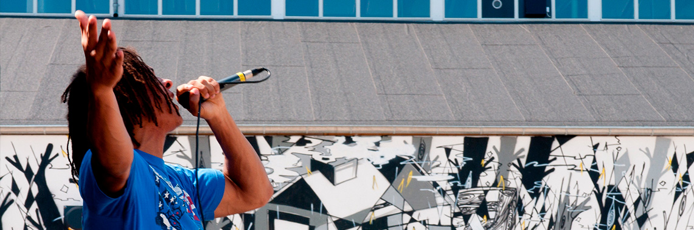
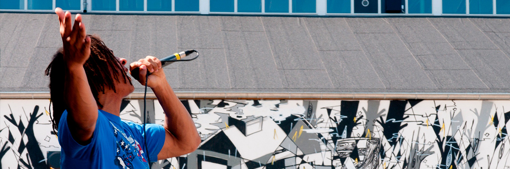

- KALENDER |
- MULIGHEDER |
- NYHEDER |
- OM |
- KONTAKT
 


Kulturproduktionscenter Godsbanen åbnede i marts 2012 i den gamle godsbanegård i Skovgaardsgade. Her kan alle byens borgere styrke og udvikle sine kulturelle kompetencer uanset hvilket niveau man befinder sig på, og her er faciliteter til alle aspekter af kulturproduktion – fra spirende idé til færdigt produkt. Faciliteterne: Godsbanens 10.500 m² er et overflødighedshorn af muligheder: Veludstyrede værksteder, indendørs produktionslokaler, grupperum, udstillingsrum, mødelokaler, black boxe (scene/produktionsrum), øvelokaler, store fællesarealer, 1.300 m² Rå Hal, der kan bruges til større arrangementer mv. Desuden har Godsbanen har konferencefaciliteter, en mini-biograf, en stor foyer med mange arrangementsmuligheder og ikke mindst spændende arkitektur og 10 lejligheder, der bruges af Godsbanens besøgende kunstnere, artists in residence og lign.
Syd for de ombyggede og renoverede godsbanebygninger arbejder Institut for (X) i gamle DSB-bygninger. Institut for (X) er en dynamisk klynge af alternative iværksætter- og kulturprojekter, som er mere frit organiseret, og som giver hele området farve og kant.
Godsbanens drift og rammer varetages af to organisationer, der har som erklæret mål at fremstå som én.(DSIG) er en selvstændig fond med egen bestyrelse. De står for aktiviteter, netværk, kommunikation, lokaleudlejning, projektpladser og Åbne Scene. Har til opgave at understøtte Godsbanen som arbejdssted for udviklingen af kulturelle kompetencer. Håndterer branding og profilering af Godsbanen og arbejder med brugerudvikling, så Godsbanens tilbud bliver synlige og tilgængelige for flest mulige brugere.
Godsbanen er ombygget af Aarhus Kommune med støtte fra Realdania. Entreprisen blev udliciteret og vundet af totalentreprenør Hans Ulrik Jensen A/S, arkitekterne 3XN, Exners tegnestue, NORD arkitekter og ingeniørfirmaet Søren Jensen. Godsbanen blev oprindeligt grundlagt I 1923, og var indtil år 2000 knudepunkt for godstogstrafikken i Jylland. Det er det største bevarede godsbaneanlæg i Danmark. Allerede i 1890erne blev det således foreslået at flytte godsbanegården ud på Mølleengen fra dens hidtidige placering i tilknytning til selve Aarhus Banegård. Planerne for omplaceringen nåede i både 1896 og 1898 helt ind i byplanerne, men der skulle altså gå hele 27 år, inden planerne blev ført ud i virkeligheden. Projektet var nemlig meget bekosteligt, og det afstedkom derfor en langvarig og tilbagevendende debat i både Byrådet og i Rigsdagen, der tøvede med at give statslige bevillinger.
Man er velkommen til at fotografere på Godsbanens arealer. Tag og gårdrum er åbne hele døgnet, og der er adgang til Foyer og Produktionsgangen mandag-fredag kl. 8.00-22.00. Man skal bare respektere andre besøgende, arrangementer, udstillinger og lignende.
Ønsker du omtale af dit arrangement på godsbanen.dk, skal du sende følgende materiale til Dorte Kerstens på dorte(at)godsbanen.dk:
- Titel
- Lokale
- Dato og tidspunkt (start og slut)
- Billetpris
- Beskrivelse af event
- 1-4 billeder i jpg- format
- Link til egen hjemmeside
- Kontakt-informationer (mail og mobil)
- Engelsk summery
Hænge plakater op på søjlerne i Foyeren og på opslagstavlen i Produktionsgangen. Lægge programmer, brochurer, postkort etc i reolen i Foyeren. Huske at fjerne dine ting, når de er uaktuelle.
At stille kassevis af programmer – kom hellere igen og fyld op. At hænge plakater op på udstillingsvæggene og i dørene.
Man kan komme ind på Godsbanen (Produktionsgangen + Foyerområdet) fra kl. 08.00 til 22.00.
Hovedbygningen er åben mandag – fredag kl. 08.00 – 16.00.
Aktørerne har forskellige åbningstider – se dem på de respektive hjemmesider.
Brobjergskolen er åben mandag – søndag kl. 09.00 – 22.00.
Udenfor almindelig arbejdstid kan pedellen kontaktes på tlf: 2920 9043
GRAFISK VÆRKSTED
Mandag – torsdag kl. 9 – 21
Fredag kl. 9 – 17
Lørdag – søndag lukket
FORM-, METAL-, TRÆ-
TEKSTIL- OG SERIGRAFI
Mandag & onsdag kl. 10 -17
Tirsdag & torsdag kl. 14 – 21
Fredag – søndag lukket
LASERCUTTER/MULTI
Mandag & onsdag kl. 10 -16
Tirsdag & torsdag kl. 14 – 20
Fredag – søndag lukket
 Skovgaardsgade 3, 8000 Aarhus C
Skovgaardsgade 3, 8000 Aarhus C
 +45 25 22 12 10
+45 25 22 12 10
info@godsbanen.dk